Conceito — hemodinâmica renal ilustrada
1. O rim no débito cardíaco
O coração bombeia ~5 L/min. O rim (dois) recebe ~1 L/min — 20% do DC, apesar de representar <0,5% do peso corporal. É o 4º órgão em DO₂ (após cérebro, coração, fígado). Um DC baixo (ex.: ICC) reduz o FSR proporcionalmente.
Hemodinâmica a serviço da homeostasia. O rim só defende o meio interno (M0) se for perfundido. Ele toma ~20% do débito não por fome de O₂, mas para filtrar — e a autorregulação mantém essa filtração estável apesar de a pressão oscilar. Quando a perfusão ou os fármacos quebram esse arranjo, a medula — que já vive hipóxica — é a primeira a sofrer (NTA).
As Fig. 1–13 abaixo são referenciadas no Caso, na Trilha e na
Avaliação (algumas reaparecem nos exercícios). Atribuição em CREDITS.md (em curadoria).

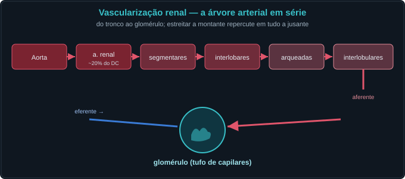
2. Córtex × medula: dois mundos de O₂
O córtex (88% do FSR) tem pO₂ > 50 mmHg — abundância relativa. A medula (12% do FSR) recebe pouco fluxo e o ramo espesso da alça de Henle (NKCC2 + Na/K-ATPase) consome O₂ de forma intensa → ERO₂_med ≈ 50–75% → pO₂_med ≈ 15–20 mmHg mesmo no normal. Qualquer queda precipita hipóxia medular → NTA.
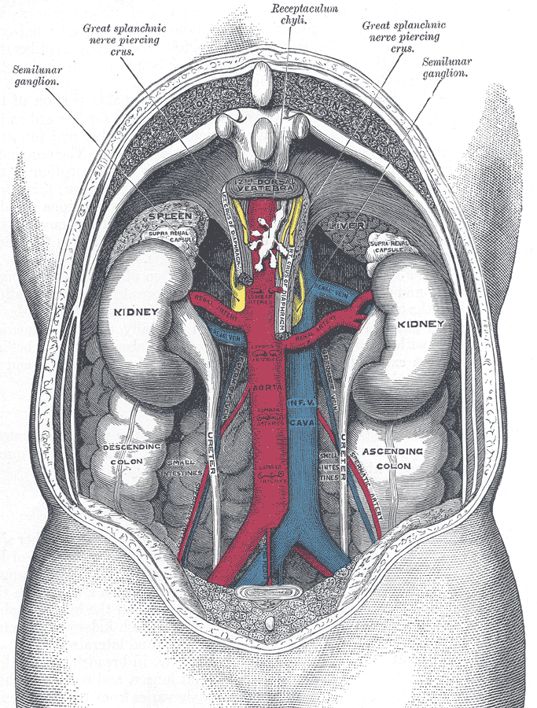
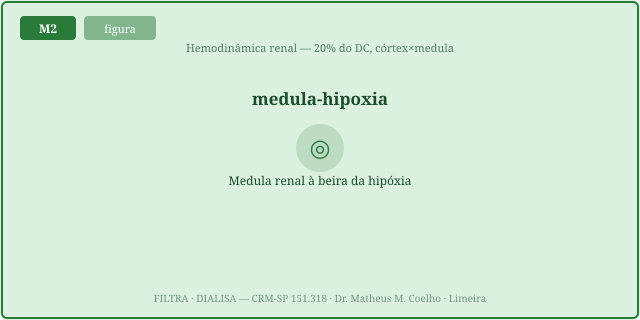
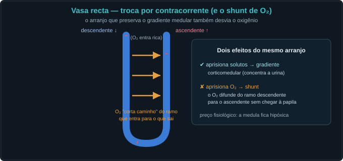
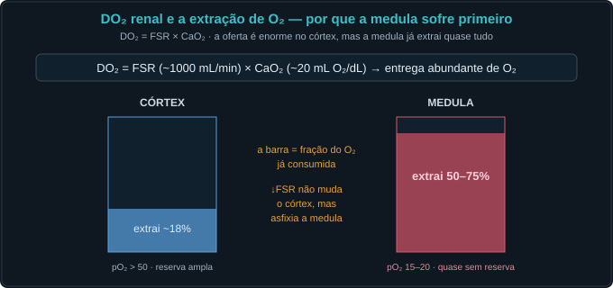
3. Autorregulação do FSR
Entre ~80 e ~180 mmHg de PAM, a arteríola aferente ajusta o tônus (miogênico + feedback tubuloglomerular da mácula densa) e mantém o FSR quase constante — o platô. Abaixo do joelho inferior a aferente já está no talo → FSR segue a PAM → precipício.
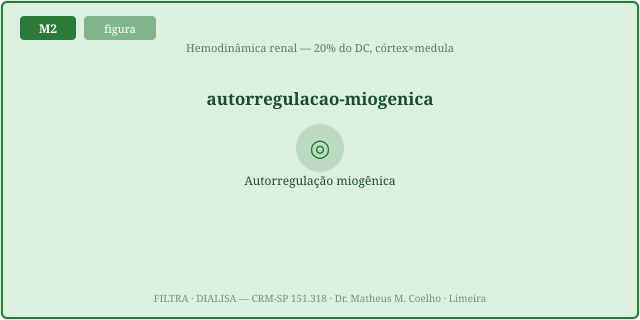
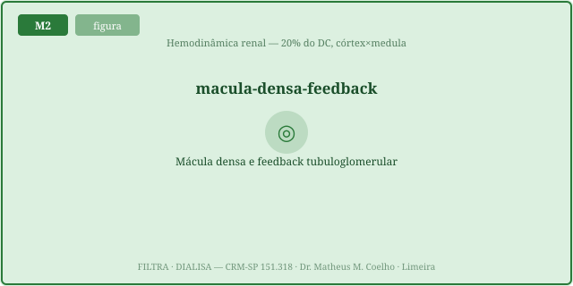
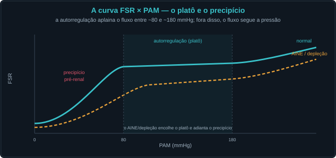
4. AINEs — chave da arteríola aferente
As prostaglandinas (PGE₂/PGI₂) sintetizadas localmente dilatam a aferente e são o safety net do rim sob RAAS ativado. Os AINEs (ibuprofeno 400–800 mg q8h; naproxeno 250–500 mg q12h) bloqueiam a COX → sem PGs → constrição aferente → FSR↓ → pO₂_med↓. O efeito é amplificado por depleção volêmica (RAAS ativado depende ainda mais das PGs).
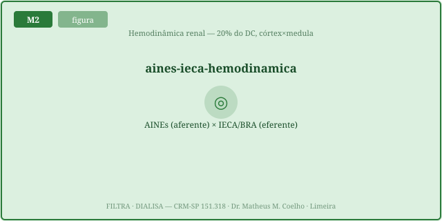
5. IECA/BRA — chave da arteríola eferente + pérola da creatinina
A angiotensina II (AngII) constrange a eferente — represa o sangue e mantém a P_GC. O IECA (enalapril 5–40 mg/dia; ramipril 2,5–10 mg/dia) / BRA (losartan 25–100 mg/dia) bloqueia a AngII → eferente dilata → P_GC↓ → TFG↓ → creatinina sobe. Isso é o mecanismo hemodinâmico pretendido — não é sinal de parar o IECA. Só vira problema se o rim dependia da eferente fechada (estenose bilateral, cardiorrenal grave).
6. Síntese hemodinâmica — FF, a tríplice ameaça e o cardiorrenal
Três consequências do que vimos: a fração de filtração liga a eferente à reabsorção; a tríplice ameaça soma os golpes sobre a P_GC; e a síndrome cardiorrenal mostra o rim refém do coração — a ponte com o Choca.
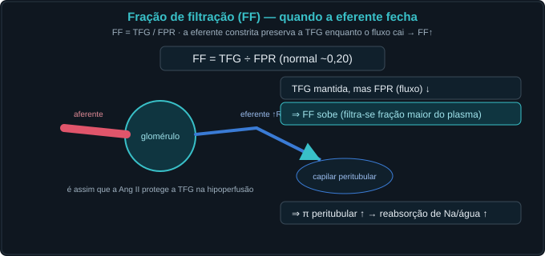
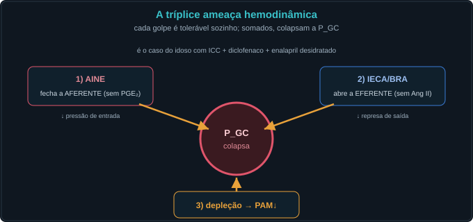
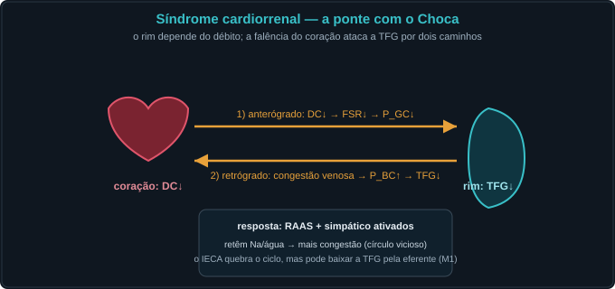
Caso — cinco atos, decida antes de revelar
Homem, 74 anos, ICC (DC ≈ 3 L/min), enalapril 10 mg/dia crônico. Automedicou-se com diclofenaco 75 mg 2×/dia por 8 dias. Chega ao PS: oligúria, Cr 1,2 → 3,4 mg/dL. Sem desidratação evidente, sem obstrução urinária.
Lição: a oligúria e a creatinina são a sombra da hemodinâmica medular: decompor FSR → córtex × medula → pO₂_med → NTA, antes de interpretar o número.
Trilha socrática — dez passos que constroem o conceito
1. O rim normalmente recebe qual fração do débito cardíaco?
Pista: calcule 1000 mL/min ÷ 5000 mL/min.
~20% — apesar de representar menos de 0,5% da massa corporal. O FSR total (2 rins) é ~1000–1100 mL/min.
2. Com DC = 3 L/min (ICC moderada), qual o FSR estimado?
Pista: 20% de 3000 mL/min.
~600 mL/min — já metade do normal antes do AINE entrar. Qualquer vasoconstrição adicional parte de uma base baixa.
3. O AINE bloqueia qual mediador e onde ele age?
Pista: COX → PGE₂/PGI₂.
Bloqueia a COX → impede a síntese de prostaglandinas vasodilatadoras (PGE₂/PGI₂) que são produzidas
localmente no rim e dilatam a arteríola aferente.
4. Por que a depleção volêmica amplifica o efeito do AINE?
Pista: quando o RAAS está ativado, de quê depende a aferente?
Com RAAS ativado (depleção, ICC), a AngII constringe a eferente E tende a comprimir a aferente —
as PGs são o "safety net" que seguram a aferente aberta. Sem PGs (AINE), a aferente fecha muito mais.
5. Com aferente constrita + RAAS ativado, o FSR muda como?
Pista: resistência aferente↑ → fluxo↓.
Cai ainda mais do que sem RAAS ativado — a multiplicação das resistências é não-linear; o risco de isquemia
medular é desproporcional ao grau de constrição.
6. A medula recebe qual porcentagem do FSR?
Pista: ~12%, enquanto o córtex recebe ~88%.
~12%. Isso significa que com FSR = 600 mL/min, a medula recebe apenas ~72 mL/min — e precisa
sustentar o ramo espesso com toda a sua demanda de O₂.
7. Mesmo com FSR normal, o pO₂ medular é aproximadamente quanto?
Pista: não 95 mmHg — a medula é hipóxica de base.
~15–20 mmHg — contra ~50+ mmHg no córtex. O ramo espesso extrai 50–75% do O₂ que chega
(ERO₂_med em repouso), o que mantém a pO₂ medular cronicamente baixa.
8. Por que a medula é tão vulnerável à hipóxia?
Pista: quem consome o O₂?
O NKCC2 (ramo espesso da alça de Henle) + Na/K-ATPase são os maiores consumidores de O₂ do
néfron — bombeiam Na⁺/K⁺/Cl⁻ de volta para o interstício e criam o gradiente corticomedular. Esse
trabalho metabólico intenso mais o fluxo reduzido criam a "paradox of renal oxygenation".
9. Como o IECA entra nessa equação de isquemia medular?
Pista: eferente dilata → P_GC↓ → TFG↓.
O IECA dilata a eferente → retira a "represa" → P_GC↓ → TFG↓. No contexto de FSR já reduzido (ICC)
+ AINE (aferente constrita), o triplo mecanismo colapsa a pressão de filtração e amplifica a isquemia
medular.
10. O córtex pouparia a mesma isquemia? Por quê?
Pista: compare as pO₂ e as ERO₂.
O córtex tem pO₂ > 50 mmHg e ERO₂_cort ≈ 8% — há grande reserva. Mesmo com FSR caindo, o córtex
tolera bem. A NTA afeta seletivamente o ramo espesso medular, por sua combinação única de
alto consumo + baixo fluxo.
Instrumento — curva FSR × PAM e pO₂ medular
Mova os controles para ver como DC, AINEs e IECA mudam o ponto de operação. A linha ciano é o FSR; a linha laranja tracejada é o pO₂ medular. O quadrado laranja é o ponto atual.
Laboratório — mova os parâmetros, leia a hemodinâmica renal
| Variável | Atual | Normal ≈ |
|---|---|---|
| FSR — fluxo sanguíneo renal (mL/min) | — | 1090 |
| FPR — fluxo plasmático renal (mL/min) | — | 600 |
| TFG (mL/min, 2 rins) | — | 125 |
| FF — fração de filtração | — | 0.20 |
| P_GC — pressão capilar glomerular (mmHg) | — | 60 |
| Q_med — fluxo medular (mL/min) | — | ~131 |
| pO₂_med — pO₂ medular (mmHg) | — | ~17 |
| pO₂_cort — pO₂ cortical (mmHg) | — | ~55 |
| ERO₂_med — extração de O₂ medular (%) | — | ~55% |
| Regime | — | normal |